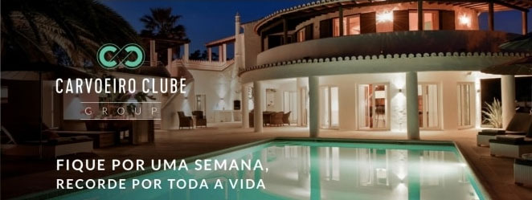

2018年的4个主要的LOGO 设计趋势
dachengbianke
2017-10-31 12:12:32
A+
A-

对于设计师而言，LOGO设计可能是最有趣也是最令人沮丧的设计项目之一，它是设计中四两拨千金的关键，也是易学难成的设计重难点。LOGO设计的这种独特特性，源自于它所承载的重要责任和“简单”外观所构成的反差。好的LOGO设计不仅包含切题的隐喻，直观的形象，还能够恰到好处地迎合需求，跟随潮流。这也是为什么设计师一方面在追求LOGO设计的持久生命力，一方面还在跟随LOGO设计的总体趋势。
LOGO设计从技术到风格都是在逐步演进的，这一点毋庸置疑。去年的LOGO设计和今年的流行趋势还有着区别，虽然客户的要求变化不大，但是你会明显的感受到最新的LOGO设计越来越讲究简约干净的线条和颜色以及吸引人的排版了。纵观过去半年新的LOGO设计作品，我们基本上可以总结出2017年的4个主要的LOGO 设计趋势。
LOGO的类型有很多，其中之一是采用文字为主的LOGO设计，就像 NASA 和乐高的LOGO。而进入2017年之后，文字 LOGO 设计开始倾向于使用更加微妙、精致细腻的字体设计。
优秀的字体LOGO有着持久的生命力。